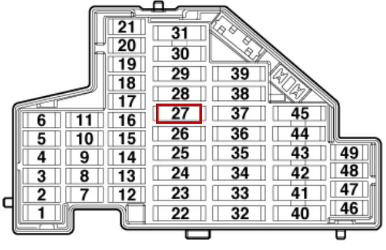
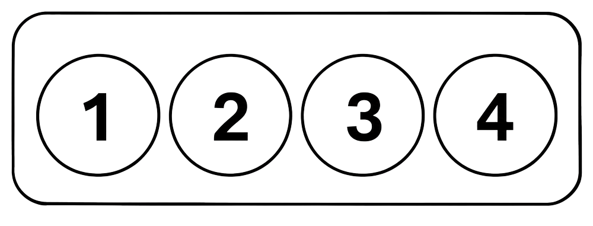

Audi S3 8P
A dry compression test of all four cylinders, with a wet test if a reading is low.


| Cylinder 1 | Cylinder 2 | Cylinder 3 | Cylinder 4 |
|---|---|---|---|
| Cylinder 1 | Cylinder 2 | Cylinder 3 | Cylinder 4 |
|---|---|---|---|
Verify these limits against ElsaWin or the repair manual for your engine code (CDL, BHZ, BWA, and others).
The variation between cylinders often tells you more than the absolute number, because gauges and cranking speed vary.
Pour about 5 ml (one teaspoon) of engine oil through the spark plug hole and retest that cylinder.
For a clearer diagnosis, follow up with a leak-down test. You can hear where the air escapes: the intake means an intake valve, the exhaust means an exhaust valve, the oil filler or crankcase means the rings, and bubbles in the coolant mean the head gasket.